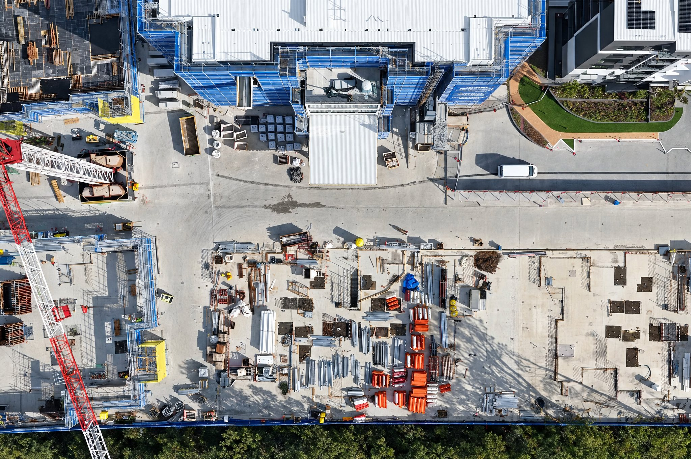
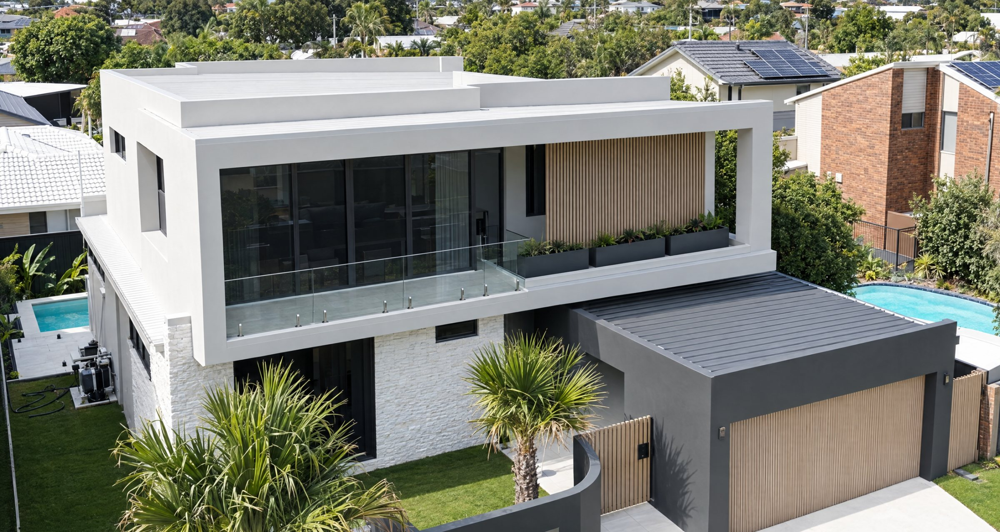
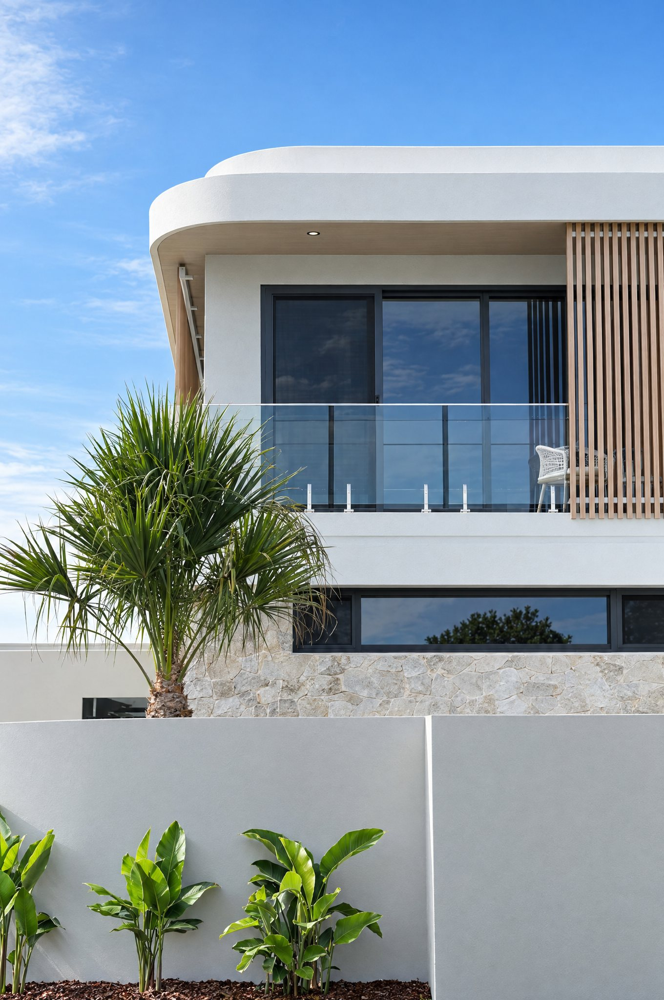
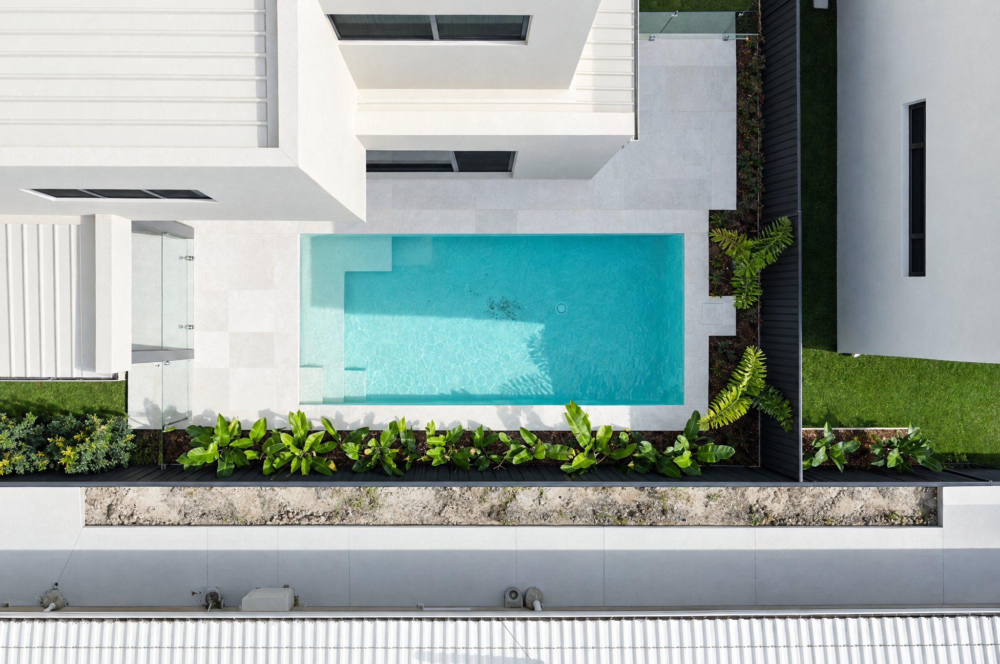
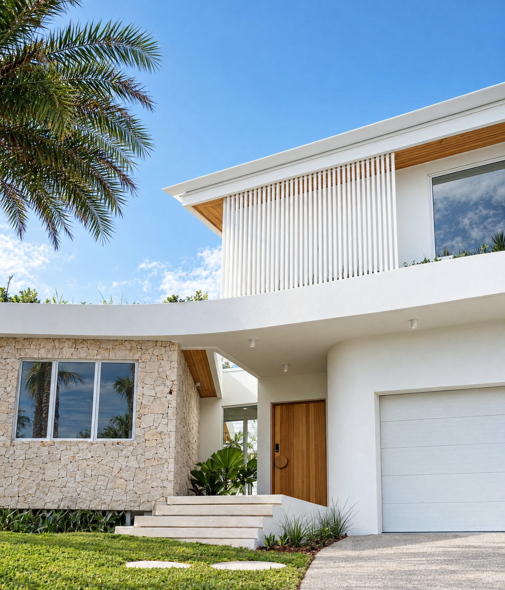
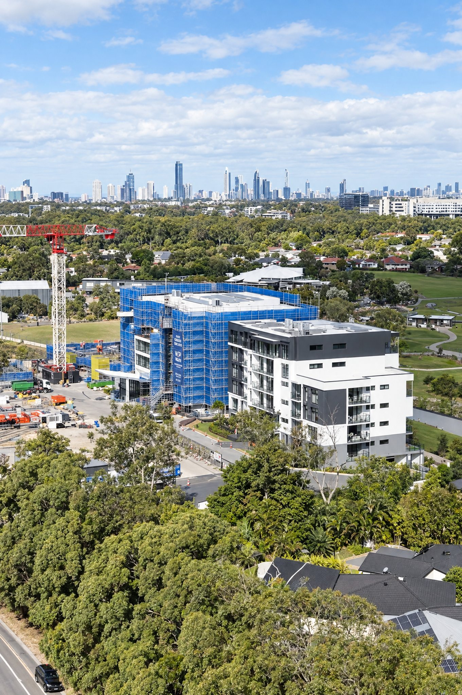
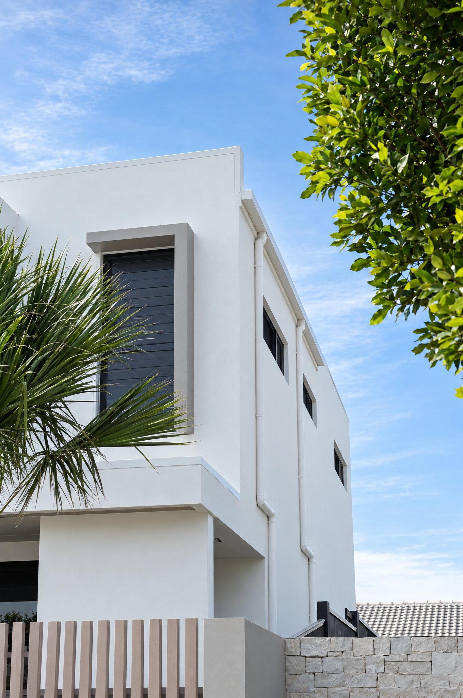
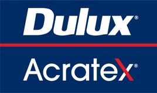
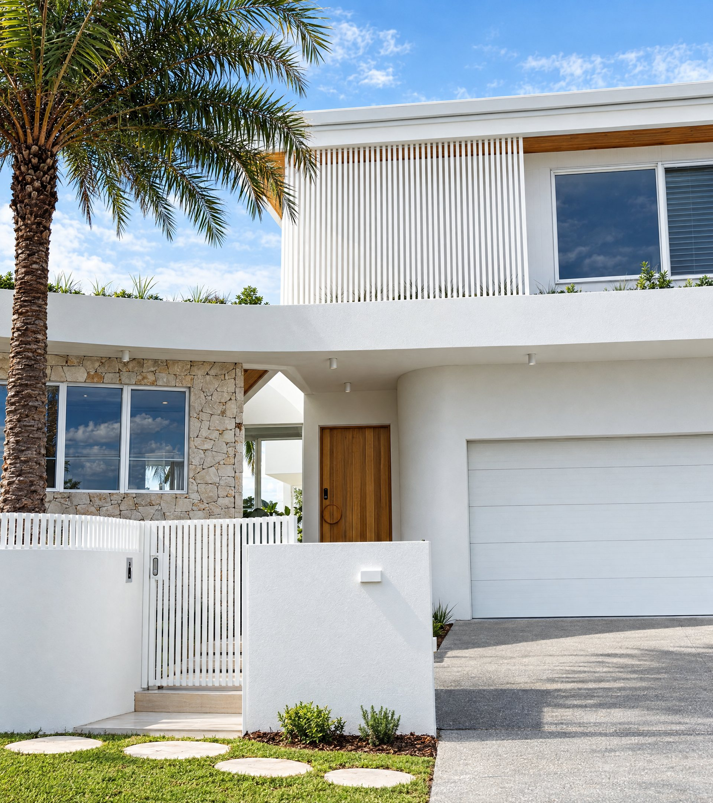

Commercial rendering · Solid plastering · Architectural finishes
coastsideBuilt for the finish.Structured for the job.
The finish is only part of the job.
On a commercial project, good plastering is expected.
What matters just as much is having the labour to meet program, understanding the specification, coordinating with other trades, maintaining communication and having the documentation sorted before the crew arrives.
That’s the operation we’ve built.
Coastside combines more than 25 years of trade experience with the crew capacity, equipment and systems required to deliver high-end residential, multi-residential and commercial packages across Queensland and Northern New South Wales.
About Coastside
The capability behind the finish.
15+ crew
Enough people on the tools to resource substantial packages, respond to changing site requirements and maintain momentum across staged works.
Pumped render
Machine-applied render gives us the capacity to cover large elevations efficiently while maintaining consistency across the facade.
Commercial systems
Experience working with specified systems from leading manufacturers including Dulux AcraTex, Rockcote, Unitex, Resene and Boral.
Project delivery
Programming, sequencing, access, substrate readiness and coordination with other trades are considered before mobilisation.
Documentation
Licensing, insurance, SWMS, certificates and supporting project documentation available for commercial procurement requirements.
Regional capacity
Gold Coast based, with projects delivered throughout South East Queensland and Northern New South Wales.
Rendering and plastering at commercial scale.
From architectural residences through to multi-residential developments and large commercial facades, our work is built around the same principle:
Understand the specification. Resource the job properly. Deliver the finish.
External rendering
Complete external rendering packages across masonry, concrete and approved substrate systems.
From preparation through to final texture and coating, we work to the specified system and architectural finish.
Commercial rendering
Large-scale rendering packages supported by crew capacity, machine application and structured project delivery.
Built for projects where output, consistency and program matter.
Solid plastering
Traditional solid plaster systems delivered across high-end residential, multi-residential and commercial construction.
Careful substrate preparation and accurate application create the foundation for the final finish.
Architectural coatings
Specified texture and coating systems for architectural facades, feature elements and design-led projects.
Applied according to system requirements and the intended architectural finish.
Venetian plaster
Specialist hand-applied finishes for premium residential, hospitality and commercial interiors.
Built in layers to create depth, movement and a finish unique to the surface.
On site and finished.






The specification comes first.
The performance of a render or coating system depends on more than what you see when the scaffold comes down.
Substrate preparation, compatibility, application thickness, curing conditions and finishing methodology all affect the result.
We work with specified systems from established manufacturers and follow the requirements of the nominated system from preparation through to completion.

Logos are trademarks of their owners and are shown to identify the systems we apply.
Discuss your specificationThe work is the proof.
Brakes Crescent, Miami
A clean, modern coastal build in Miami on the southern Gold Coast.
View case study
Coastal residence
White rendered facade with battens and a stone base.
View case studyMulti-storey residential
Multi-storey apartment buildings in construction, with the Gold Coast skyline behind.
View case studyFrom tender to handover.
Clear scope before anyone starts.
The easiest problems to solve on a construction project are the ones identified before work begins. Our process is designed to establish scope, specification, access, sequencing and program requirements before mobilisation.
- 01
Send the project
Send through the drawings, elevations, finish schedule, specification and relevant construction program.
Tender documentation can be supplied directly or via your document platform.
- 02
Scope review
We review quantities, substrates, nominated systems, access, architectural details and the proposed sequence of works.
Where something isn’t clear, we’ll raise it before pricing rather than make assumptions that become variations later.
- 03
Proposal
You’ll receive a clearly defined proposal outlining the package we’ve priced, inclusions and relevant exclusions.
- 04
Program
Once engaged, we coordinate commencement, crew requirements, material supply and sequencing against the construction program.
- 05
Delivery
The crew mobilises and works through the agreed package in coordination with site management and surrounding trades.
- 06
Handover
Works are reviewed, outstanding items addressed and the package prepared for handover.
Commercial rendering.
Properly resourced.
From the first take-off to the final elevation, Coastside brings the crew, systems and trade experience required to deliver substantial rendering and plastering packages.